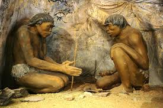
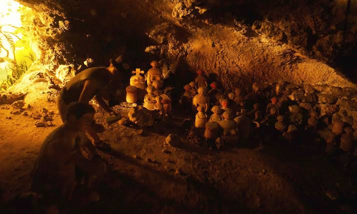

Historical and Archaeological Exploration
- In 1962, Dr. Robert B. Fox, an American anthropologist, discovered the Tabon Man remains in the cave.
- The Tabon Man is the earliest known modern human (Homo sapiens) in the Philippines, dating back approximately 22,000 to 24,000 years.
- Additional discoveries suggest humans have inhabited the area for over 50,000 years.
Discovery of Tabon Man

- Archaeologists uncovered numerous stone tools, pottery shards, and human remains during excavations in the cave complex.
- Tools made of flaked stone and fossilized remains highlight the presence of prehistoric humans and their way of life.
- The Manunggul Jar served as a secondary burial jar, showcasing early artistic and cultural expressions.
Ancient Artifacts
- Tabon Cave was used as a burial site, with burial jars and skeletal remains providing evidence of early burial customs.
- Many of the burial jars are intricately designed, showcasing early artistic and cultural expressions.
Burial and Ritual Practices
